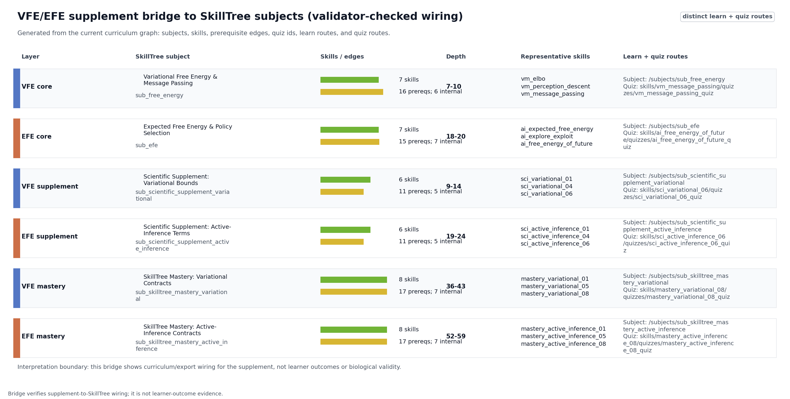
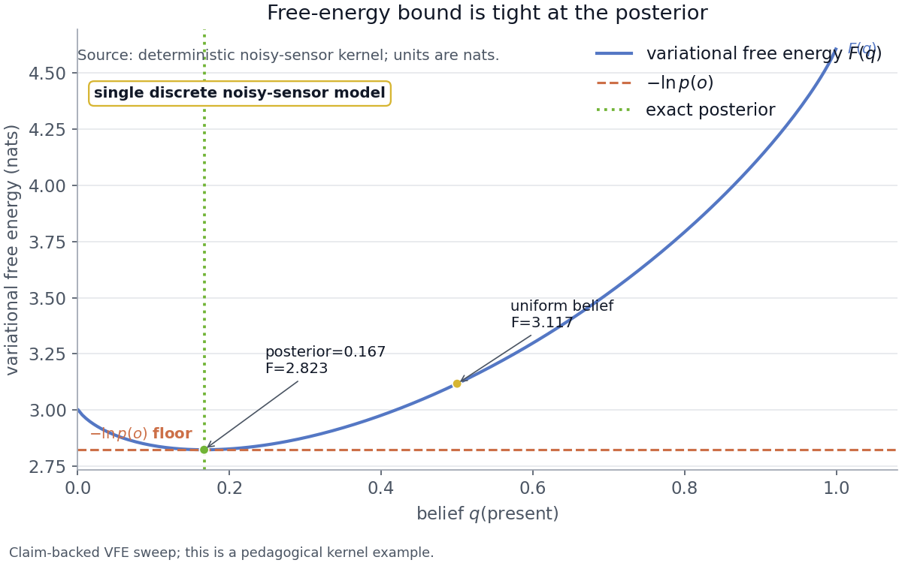
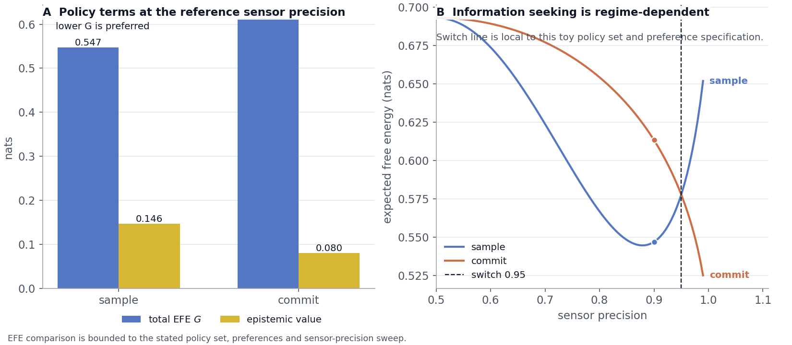
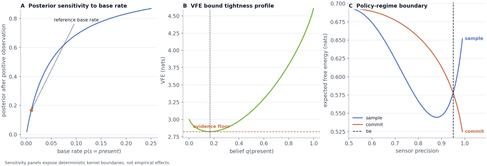
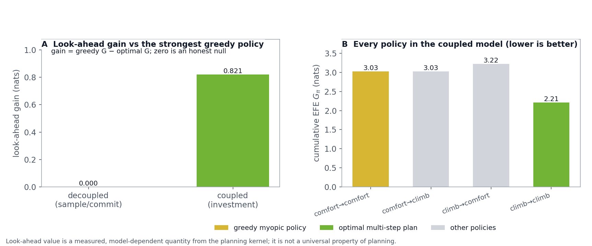
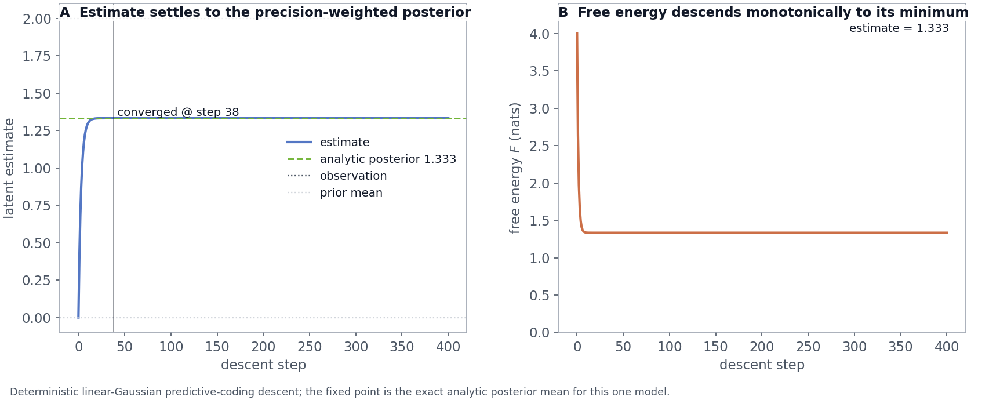

Supplement: Model-Bounded Variational and Expected Free Energy Examples
This supplement carries the kernel-level mathematical walkthroughs that support the curriculum without crowding the main Results section. The purpose is narrow: show how the claim registry, figures and prose jointly teach the two optimization objectives that organize the course. Variational free energy is used for belief updating under a fixed generative model; expected free energy is used for policy evaluation under uncertainty. Both examples are deliberately small enough to audit by rerunning the kernels.
Notation is fixed before the examples: \(s\) is the latent state, \(o\) is the observation, \(p(s)\) is the prior, \(p(o\mid s)\) is the likelihood, \(p(o,s)\) is the joint generative density, and \(q(s)\) is the recognition density. The variational free-energy convention is \(F[q]=\mathbb{E}_{q(s)}[\ln q(s)-\ln p(o,s)] =D_{\mathrm{KL}}(q(s)\|p(s\mid o))-\ln p(o)\), so the bound is tight when \(q(s)\) equals the exact posterior. For expected free energy, this supplement uses the lower-is-better policy convention \(q(\pi)=\mathrm{softmax}(-\gamma G(\pi))\) with policy precision \(\gamma\); the plotted terms are therefore tied to the stated policy set and preference distribution, not to a universal sign convention [buckley2017free; parr2022active; millidge2021whence; champion2026reframing; nuijten2026what_type_inference; nuijten2026efe_planning_vi].
SkillTree bridge from derivations to quiz-gated subjects
The supplement is not an isolated appendix of equations. It is a
bridge from kernel claims to quiz-gated SkillTree material:
sub_free_energy and sub_efe carry the core
VFE/EFE concepts, the scientific-supplement subjects train bound and
term interpretation, and the mastery subjects turn those interpretations
into route-handoff and quiz-authoring checks. [@fig:vfe_efe_skilltree_bridge]
is generated from the current curriculum graph after structural checks
and SkillTree route contract so the text, figure, and dashboard artifact
all point to the same subject, skill, prerequisite-edge, quiz, and route
data. This bridge also keeps the VFE/EFE distinction scholarly rather
than mnemonic: VFE is an evidence bound for belief updating, while EFE
is a policy-evaluation objective whose formulations and preference
assumptions need explicit scope boundaries [buckley2017free;
parr2022active; smith2022tutorial; millidge2021whence;
champion2026reframing; nuijten2026what_type_inference;
nuijten2026efe_planning_vi].
| Layer | Skills | Prerequisite edges | Depth | Representative IDs | Learn route | Quiz route | |
|---|---|---|---|---|---|---|---|
| VFE core | 7 | 16 total; 6 internal | 7-10 | vm_elbovm_perception_descentvm_message_passing |
/subjects/sub_free_energy |
/subjects/sub_free_energy/skills/vm_message_passing/quizzes/vm_message_passing_quiz |
|
| EFE core | 7 | 15 total; 7 internal | 18-20 | ai_expected_free_energyai_explore_exploitai_free_energy_of_future |
/subjects/sub_efe |
/subjects/sub_efe/skills/ai_free_energy_of_future/quizzes/ai_free_energy_of_future_quiz |
|
| VFE supplement | 6 | 11 total; 5 internal | 9-14 | sci_variational_01sci_variational_04sci_variational_06 |
/subjects/sub_scientific_supplement_variational |
/subjects/sub_scientific_supplement_variational/skills/sci_variational_06/quizzes/sci_variational_06_quiz |
|
| EFE supplement | 6 | 11 total; 5 internal | 19-24 | sci_active_inference_01sci_active_inference_04sci_active_inference_06 |
/subjects/sub_scientific_supplement_active_inference |
/subjects/sub_scientific_supplement_active_inference/skills/sci_active_inference_06/quizzes/sci_active_inference_06_quiz |
|
| VFE mastery | 8 | 17 total; 7 internal | 36-43 | mastery_variational_01mastery_variational_05mastery_variational_08 |
/subjects/sub_skilltree_mastery_variational |
/subjects/sub_skilltree_mastery_variational/skills/mastery_variational_08/quizzes/mastery_variational_08_quiz |
|
| EFE mastery | 8 | 17 total; 7 internal | 52-59 | mastery_active_inference_01mastery_active_inference_05mastery_active_inference_08 |
/subjects/sub_skilltree_mastery_active_inference |
/subjects/sub_skilltree_mastery_active_inference/skills/mastery_active_inference_08/quizzes/mastery_active_inference_08_quiz |
Bridge figure

Noisy-sensor posterior and the tight variational-free-energy bound
On a noisy-sensor model with a \(1\%\) base rate, \(99\%\) sensitivity, and \(95\%\) specificity, a positive observation yields a posterior of 0.166667 for the latent condition. This is the same base-rate calibration problem that makes Bayesian reasoning difficult in natural-language judgment tasks and motivates frequency-format teaching examples for Bayesian inference [cosmides1996intuitive; gigerenzer1995bayesian]. The evidence probability of the positive observation is 0.0594, so the observation surprise is 2.82346 nats.
| Noisy-sensor parameter | Paper value |
|---|---|
| Latent states | present, absent |
| Observation index | positive |
| Prior \(D\) | \([0.01, 0.99]\) |
| Likelihood rows \(A_{o,s}\) | positive: \([0.99,
0.05]\); negative: \([0.01, 0.95]\) |
| VFE sweep coordinate | \(q(\mathrm{present})\) over \([0.001, 0.999]\), plus the exact posterior and \(0.5\) |
Evaluating variational free energy across beliefs confirms the central inequality: a uniform belief gives 3.11735 nats, while the true posterior gives 2.82346 nats, exactly the negative log-evidence. [@fig:free_energy] shows the full one-dimensional sweep over \(q(\mathrm{present})\): the curve bottoms out at the exact posterior and stays above the surprise line everywhere else. The plot should not be read as a universal geometry of all recognition densities. It is a controlled diagnostic for one discrete model, one observation and one belief coordinate.

Expected free energy: epistemic value and bounded policy comparison
Decomposing expected free energy on an informative sensor shows that an uncertain belief carries positive epistemic value (0.368064 nats) while a certain belief carries none (0 nats): once the state is known, an observation cannot reduce uncertainty. In the two-action agent, preferences are neutral, so the pragmatic term is identical for both actions and the choice is decided by information gain. Under the lower-is-better \(G(\pi)\) convention above, the information-seeking sample action scores lower expected free energy (0.546837 nats) than commit (0.613267 nats), because it carries higher epistemic value (0.146311 nats versus 0.079881 nats). This is the epistemic drive of Active Inference: no separate curiosity bonus is required in the reference formulation used here [friston2015epistemic; friston2017curiosity; dacosta2020synthesis; sajid2021demystified]. Derivation and unification work is the reason the supplement keeps the formulation explicit instead of presenting “expected free energy” as a single unqualified object [millidge2021whence; champion2026reframing; nuijten2026what_type_inference; nuijten2026efe_planning_vi].
Preference convention and parameters
One convention should be made explicit here: the kernel normalizes
the preference vector \(C\) to a
probability distribution before taking its logarithm for the pragmatic
term (preferences = normalize(C), then \(\mathbb{E}_{q(o)}[\ln
\mathrm{normalize}(C)]\)), so the values plotted above assume
\(C\) is a preference
distribution. This is a specific modeling choice rather than
the only option: canonical Active Inference often treats \(C\) directly as a vector of
log-preferences, which shifts the pragmatic term by an additive constant
and can change its scale relative to the epistemic term.
EFE parameter table
| EFE sample/commit parameter | Paper value |
|---|---|
| Sensor likelihood | \(A=[[p,1-p],[1-p,p]]\), with \(p=0.9\) |
| EFE decomposition preference | \(C=[0.9,0.1]\) for the informative-sensor term example |
| Agent preference | Neutral \(C=[0.5,0.5]\) for the sample/commit policy comparison |
| Prior before observation | \(D=[0.5,0.5]\) |
| Actions | sample uses identity dynamics; commit maps
both prior states toward state 0 with transition columns
\([0.95,0.05]\) |
| Policy posterior | \(q(\pi)=\mathrm{softmax}(-\gamma G_\pi)\) over the two one-step policies |
Sensor precision as a sample-versus-commit policy boundary
The expected-free-energy result is not a universal law. It is pinned to a specific moderate-precision regime: at sensor precision \(0.9\), sampling wins; at the computed switch precision 0.95, sample and commit tie; above that point, the commit action can become lower in expected free energy. [@fig:efe] shows both the sample/commit comparison and the precision sweep, making the regime boundary explicit instead of hiding it in prose [millidge2021whence; champion2026reframing; nuijten2026what_type_inference; nuijten2026efe_planning_vi].
| Precision-sweep parameter | Paper value |
|---|---|
| Sensor precision range | \(p \in [0.5,0.99]\) with the computed switch inserted into the grid |
| Sweep samples | \(101\) grid samples before inserting \(p=0.9\) and the switch precision |
| Prior, preference, actions | Same neutral two-action agent as the sample/commit comparison |
| Tie criterion | The switch is the bisection point where \(G_{\mathrm{sample}}-G_{\mathrm{commit}}=0\) |

[@fig:kernel_sensitivity_profiles] broadens the sensitivity view without changing the evidence class. The left panel varies the base rate in the same noisy-sensor likelihood and shows how a positive observation’s posterior changes as the prior changes. The middle panel repeats the VFE bound profile so the equality point remains tied to the exact posterior. The right panel repeats the EFE precision sweep and marks the computed sample/commit boundary. These panels are deterministic kernel diagnostics: they identify where the teaching example is stable or regime-limited, not whether a learner or a biological system will behave that way.

Exact inference on a chain with sum-product belief propagation
The message-passing curriculum is bound to a worked example rather than left as prose. Because the example factor graph is acyclic, sum-product belief propagation returns the exact node marginals for a three-node sticky latent chain with a single informative reading at the middle node. The observed node settles at 0.9, and the smoothing message lifts each unobserved neighbor from its prior to 0.74 – a lift of 0.24 that is produced purely by propagating the one reading along the transition factor. Because a chain is a tree, these marginals are the same numbers a brute-force enumeration of the full joint would give; the test suite pins that equality, so the example is an exact-inference check, not an approximation [kschischang2001factor_graphs; pearl1988probabilistic_reasoning; parr2022active]. Factor-graph message passing is also a live implementation path for EFE minimization, but this supplement uses the chain only to teach exact sum-product inference and keeps policy-optimization message passing out of scope for this release [nuijten2025message_passing_efe].
Sum-product parameter table
| Sum-product parameter | Paper value |
|---|---|
| Chain length | \(3\) binary latent nodes |
| Prior on node \(0\) | \([0.5,0.5]\) |
| Sticky transition | \([[0.8,0.2],[0.2,0.8]]\) |
| Evidence potentials | node \(0\): \([1,1]\); node \(1\): \([0.9,0.1]\); node \(2\): \([1,1]\) |
Conjugate parameter learning from Dirichlet beliefs
Parameter learning is shown as a Dirichlet-conjugate update of one sensor column. A flat prior has mean 0.5; after a fixed observed count vector the posterior mean sharpens to 0.75, and the expected log-parameter that variational message passing actually consumes is -0.30202 nats, computed through the digamma identity \(\mathbb{E}[\ln p_i]=\psi(\alpha_i)-\psi(\sum_j\alpha_j)\). This is the learning half of active inference: beliefs about model parameters move with evidence, not just beliefs about states [dacosta2020synthesis].
Bayesian model reduction: whether data require added structure
Bayesian model reduction compares the evidence of a full model against a reduced model whose pruned state carries negligible prior mass. After a positive reading on the noisy-sensor model the full-model log evidence is -2.82346 nats and the reduced-model log evidence is -2.99571 nats, so the log Bayes factor is 0.172252 nats. The positive sign says the data support keeping the pruned structure: the reduced model is rejected. Both terms are exact log evidences, so the reported factor is the difference of two computed numbers rather than a hand-typed value [friston2018bayesian_model_reduction; parr2022active].
| BMR parameter | Paper value |
|---|---|
| Full prior | \(D=[0.01, 0.99]\) |
| Reduced prior | the present state is set to \(10^{-6}\) and the prior vector is
renormalized |
| Observation and likelihood | same positive observation and noisy-sensor likelihood as the VFE example |
| Score | \(\log P(o\mid\mathrm{full})-\log P(o\mid\mathrm{reduced})\) |
Ambiguity as a state-dependent component of expected free energy
Expected free energy carries an ambiguity term – the expected entropy of the likelihood columns – that the main decomposition leaves implicit. On an asymmetric sensor whose two states differ in how noisy their readings are, the crisp state has likelihood entropy 0.325083 nats, while a uniform belief averages to 0.509115 nats. Ambiguity is therefore a property of where the agent believes it is, which is why reducing it is part of what drives exploration [parr2022active; sajid2021demystified].
Multi-step planning and model-dependent look-ahead value
The one-step agent above is generalized to a planner that scores every length-\(H\) action sequence by its cumulative expected free energy and forms a posterior over policies, \(q(\pi)=\mathrm{softmax}(-\gamma G_\pi)\); at \(H=1\) the per-policy values reduce exactly to the one-step result, a consistency invariant the tests pin. Whether planning beats a myopic agent is then a measured question, not an assumption, and the answer is regime dependent.
In a decoupled sample/commit model the optimal multi-step plan coincides with the strongest greedy policy, so the look-ahead gain is exactly 0 nats – an honest null. In a coupled investment model, where a state that is myopically attractive blocks access to a higher-value goal, the planner pays a worse first step to reach the goal: the greedy policy scores 3.02826 nats, the optimal plan scores 2.20728 nats, and the look-ahead gain is 0.820981 nats with the policy posterior concentrating 0.915376 of its mass on the winning plan ([@fig:planning_lookahead]). The comparator is the strongest myopic policy, not a weakened straw baseline, so the gain is a fair number; the first-principles lesson is that look-ahead pays only when immediate and long-run value diverge [parr2022active; dacosta2020synthesis].
| Planning parameter | Decoupled sample/commit model | Coupled investment model |
|---|---|---|
| States | \(2\) latent states | start, comfort, goal,
climb |
| Observation model | informative sensor with \(p=0.9\) | identity likelihood |
| Preference vector | \(C=[0.9,0.1]\) | \(C=[0.03,0.22,0.55,0.20]\) |
| Initial prior | \(D=[0.5,0.5]\) | \(D=[1,0,0,0]\) |
| Actions | sample identity; commit collapse toward
state 0 |
comfort sends start to comfort; climb
sends start to climb and climb to goal |
| Horizon and policy precision | \(H=2\), \(\gamma=4\) | \(H=2\), \(\gamma=4\) |

Continuous predictive coding as model-specific prediction-error descent
The discrete examples above update beliefs in one shot; the continuous-state face of the Free Energy Principle instead settles a latent estimate by descending the free energy along precision-weighted prediction errors. On a single linear-Gaussian level – a vague unit-variance prior at zero meeting a more precise reading of 2 – the estimate relaxes from the prior mean to 1.33333, the exact analytic posterior mean, where the sensory prediction error (0.666667) and the prior prediction error (1.33333) balance once each is weighted by its precision.
[@fig:predictive_coding] shows the estimate converging to that fixed point while, under the stated objective and step size used in this simulation, the free energy decreases monotonically to its analytic minimum. The result is exact for the linear-Gaussian case the kernel tests pin against a closed form; it is a controlled teaching example, not a claim that prediction-error descent is exact for nonlinear or hierarchical models [kalman1960linear_filtering; sarkka2013bayesian; buckley2017free; parr2022active; kataoka2026extended_predictive_coding].
| Predictive-coding parameter | Paper value |
|---|---|
| Prior mean and variance | \(\mu_0=0\), \(\sigma_0^2=1\) |
| Observation and variance | \(y=2\), \(\sigma_y^2=0.5\) |
| Descent rate and steps | rate \(0.1\), maximum \(400\) steps |
| Analytic target | Gaussian posterior mean from the linear filtering update |
